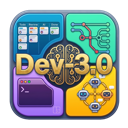

DEV3 ARTIFACT · UX CONCEPTS
Task card pipeline widget — 5 concepts
Narrower than today's dots-plus-label row, with a one-click Complete built in. Closed and open states, both themes.
What we are fixing
Today the widget is
MiniPipeline (7 dots + 6 connectors) plus the status label, wired to
PipelineDropdown. It eats a full card row of roughly 160 px and offers no direct way to send
a task to Completed — that costs a click into the menu plus a second click on the last row.
Today — closed
measured closed width: —
Today — open (MOVE TO)
Pain
- 7 dots always rendered, 6 of them are noise most of the time.
- Label duplicates the column the card already sits in.
- Complete = 2 clicks + a target that moves down the list.
Keep
- The at-a-glance "how far along is this" read.
- Status colour as the primary signal.
- One entry point to the full MOVE TO menu.
Side by side
All closed states on one row, same scale, same card. Widths are measured live in the browser, not estimated.